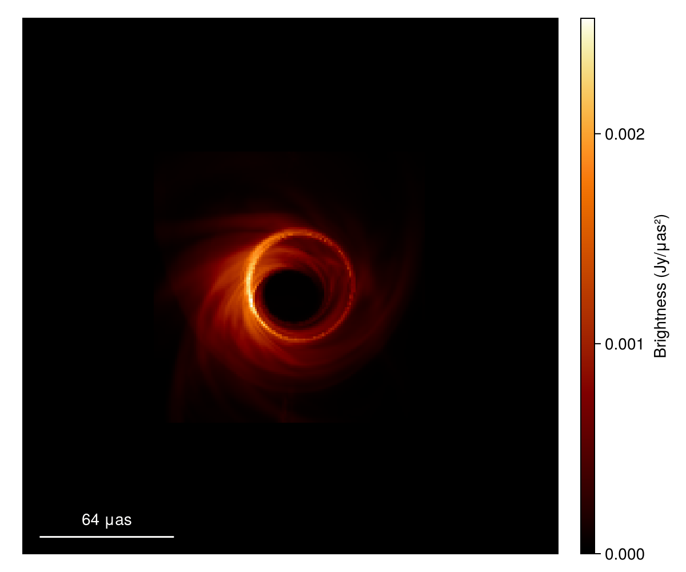
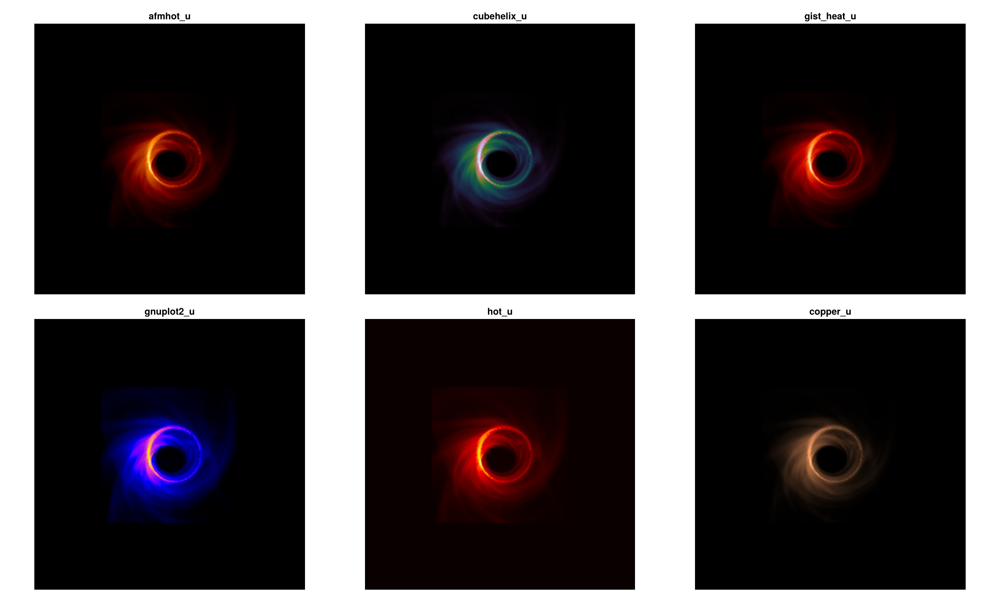
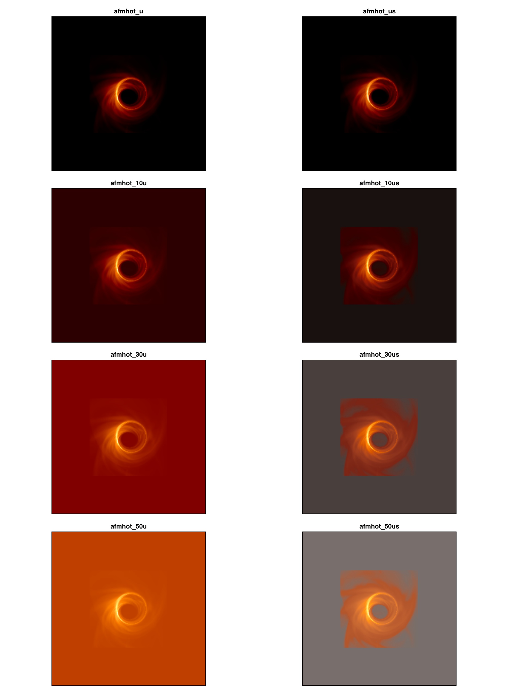

Using with EHTJulia
Load an EHT imaging model
Download jason_mad_eofn.txt from the public eht-imaging models directory. Pyehtim loads the text model; save it as FITS before loading the shared IntensityMap with VLBISkyModels.
using Pyehtim
using VLBISkyModels
model_path = "jason_mad_eofn.txt"
fits_path = "jason_mad_eofn.fits"
model = Pyehtim.ehtim.image.load_txt(model_path)
model.save_fits(fits_path)
im = load_fits(fits_path, IntensityMap)The documentation build obtains its FITS input outside the repository. Model text files, generated FITS files, and rendered figures are not package assets.
Render the shared image
Pass the table colors to VLBISkyModels.imageviz. The same im is used by all subsequent comparisons.
using CairoMakie
using EHTColorSchemes
using VLBISkyModels
scheme = colorscheme(:afmhot_us)
fig = imageviz(im; size = (600, 500), colormap = scheme.colors)
save("afmhot-us.png", fig)
Compare common sequential families
The six panels below use the same IntensityMap and one shared intensity range. Only the table color mapping changes.
names = (:afmhot_u, :gnuplot2_u, :cubehelix_u, :hot_u, :gist_heat_u, :copper_u)
display_range = extrema(parent(im))
fig = Figure(; size = (1500, 900))
axs = [Axis(fig[i, j], xreversed = true, aspect = 1) for i in 1:2, j in 1:3]
for (ax, name) in zip(vec(axs), names)
image!(ax, im; colormap = colorscheme(name).colors, colorrange = display_range)
ax.title = String(name)
end
hidedecorations!.(axs)
save("eht-family-comparison.png", fig)
Eight-panel afmhot comparison
names = (:afmhot_u, :afmhot_10u, :afmhot_30u, :afmhot_50u,
:afmhot_us, :afmhot_10us, :afmhot_30us, :afmhot_50us)
all(name in scheme_names() for name in names) || error("missing scheme")
display_range = extrema(parent(im))
fig = Figure(; size = (1100, 1500))
axs = [Axis(fig[i, j], xreversed = true, aspect = 1) for i in 1:4, j in 1:2]
for (ax, name) in zip(vec(axs), names)
image!(ax, im; colormap = colorscheme(name).colors, colorrange = display_range)
ax.title = String(name)
end
hidedecorations!.(axs)
save("afmhot-variants.png", fig)